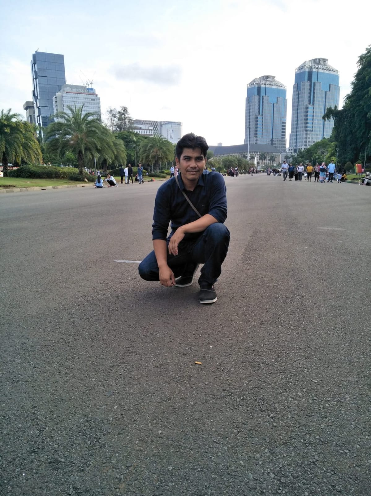
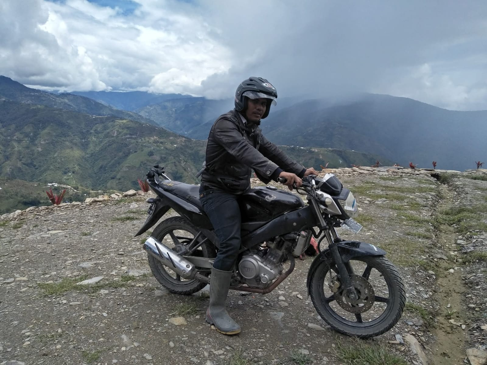
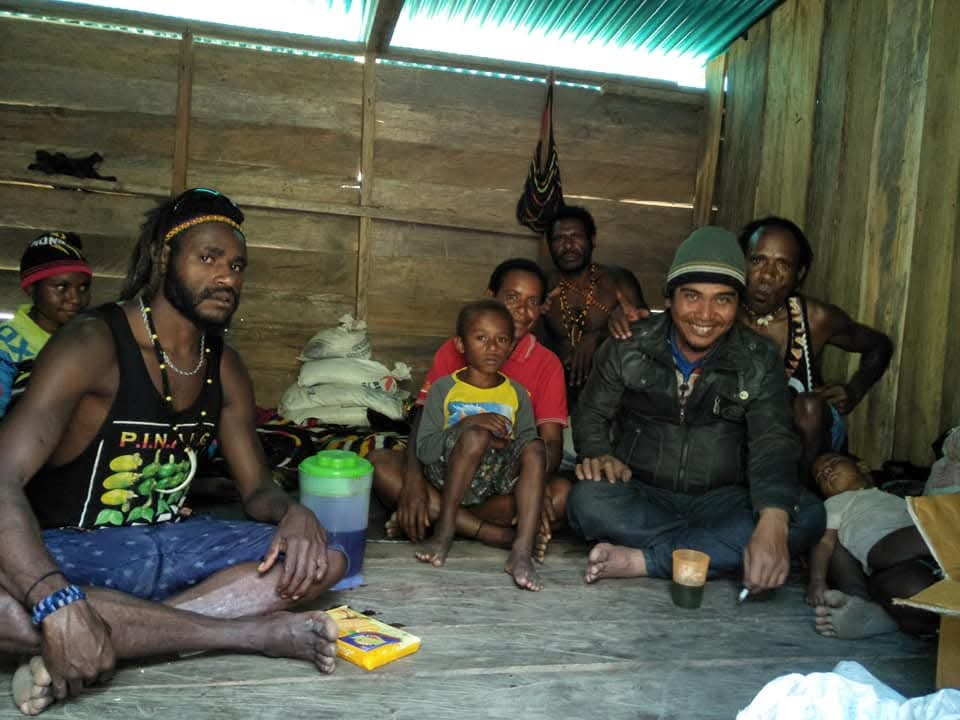
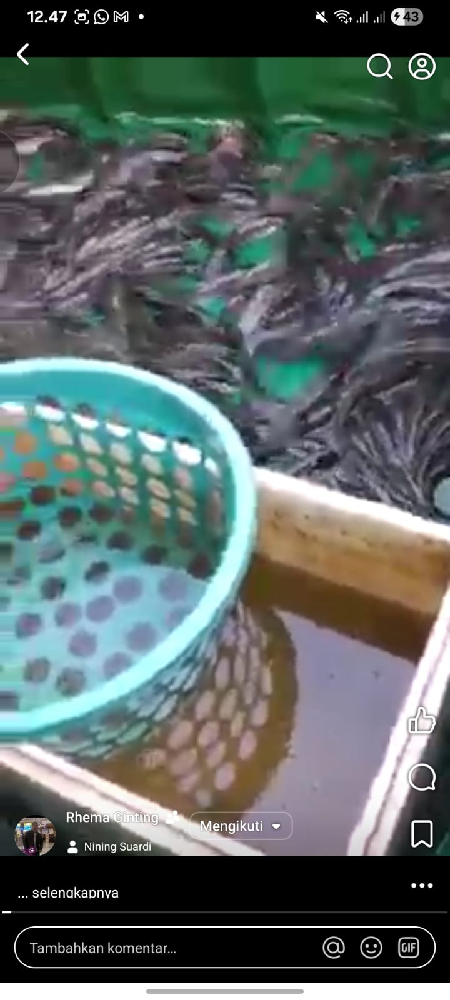
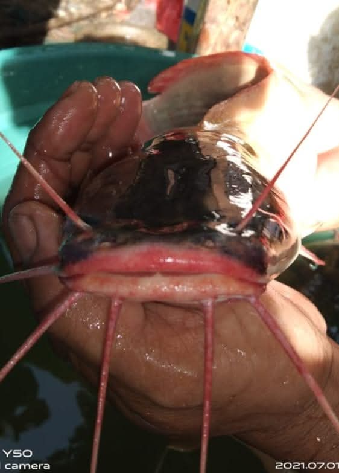
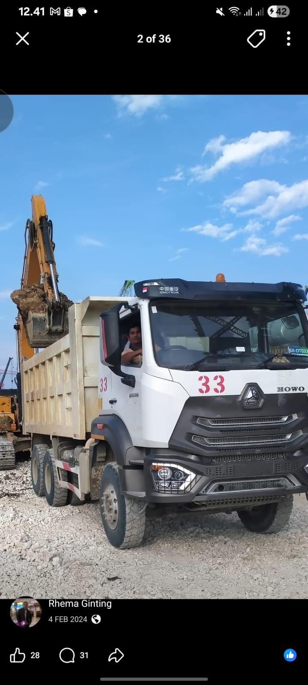
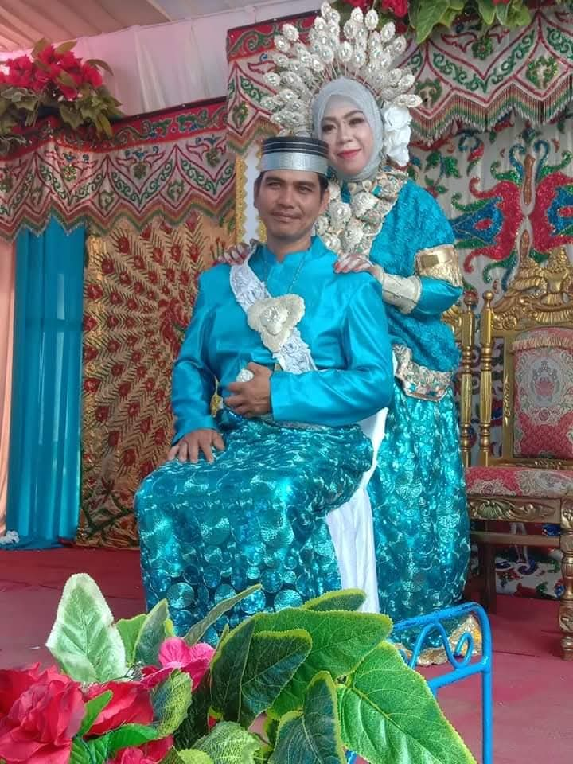
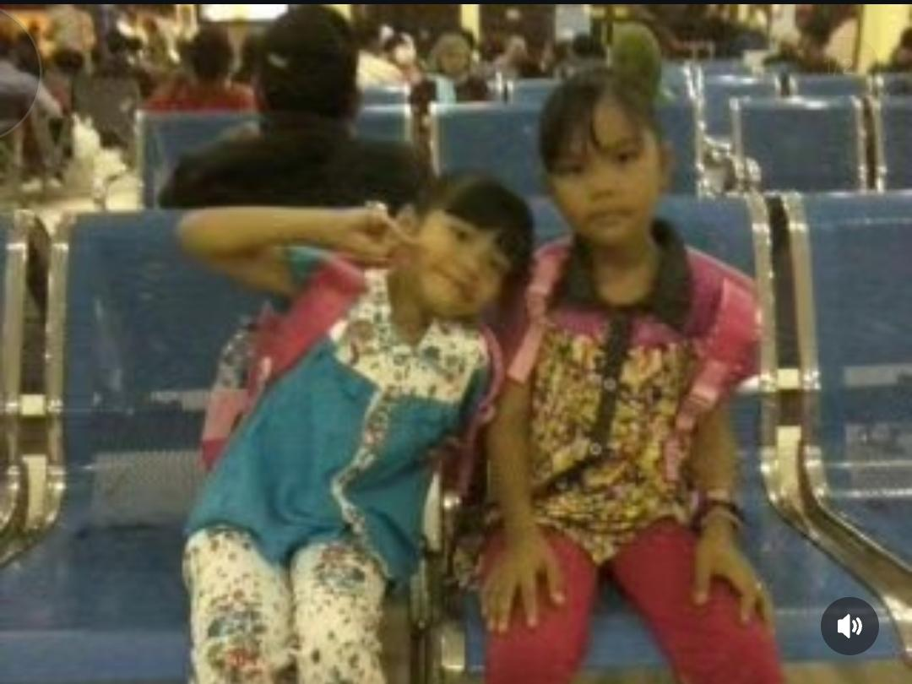

45 Tahun
Hubungi via Facebook"Sebuah kehormatan bisa berbagi sepenggal kisah tentang perjalanan hidup, keringat, dan karya yang telah saya lalui."

"Menyusuri jalan-jalan di tengah hutan Papua, di mana setiap jengkal tanah menyimpan cerita perjuangan."
"Membangun persahabatan dengan masyarakat lokal, belajar tentang keramahtamahan sejati."
"Dari benih hingga panen, setiap lele adalah bukti ketelatenan dalam berwirausaha."
"Momen panen yang selalu dinanti, buah manis dari kerja keras dan kesabaran."
"Alat berat adalah rekan kerja sehari-hari, menaklukkan medan demi kemajuan bangsa."
"Masa lalu adalah pelajaran, masa kini adalah kesempatan."
"Terus melangkah, memberikan yang terbaik untuk keluarga.""Portofolio ini bukan sekadar deretan kata dan gambar, melainkan cerminan dari dedikasi dan cinta saya pada kehidupan. Terima kasih telah bersedia melihat."